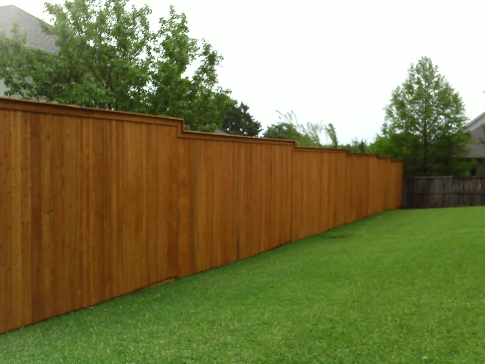

SERVICES / DENTON, TEXAS
Fences for every kind of space.
Explore the residential and commercial fencing, repair and gate solutions Denton Fence offers.

FENCE MATERIALS
Choose the right look for your space.
Wood, ornamental iron, chain link, ranch style and vinyl each shape a property differently.

CARE & REPAIR
Existing fences need attention, too.
Fence staining and repairs are part of the services Denton Fence offers.

GATES & ACCESS
An entrance is part of the picture.
Discuss driveway gates and gate operators directly with the company.
A NOTE ON COLOR
Exploring fence stains?
The original Denton Fence site displays a variety of stain colors and notes that colors on a screen may vary slightly from the final appearance. Treat screen colors as references, not exact finish guarantees.
LET'S TALK FENCINGTell us what
Tell us what
you have in mind.
Tell us about your project.